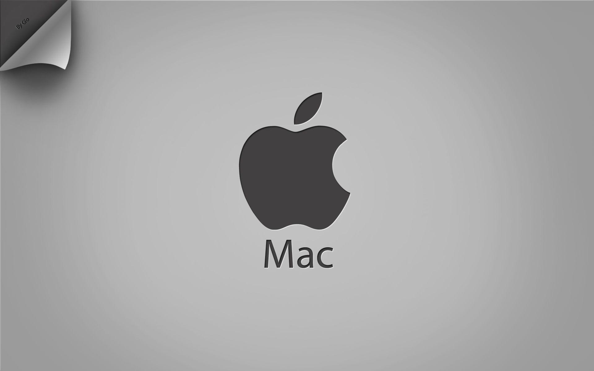
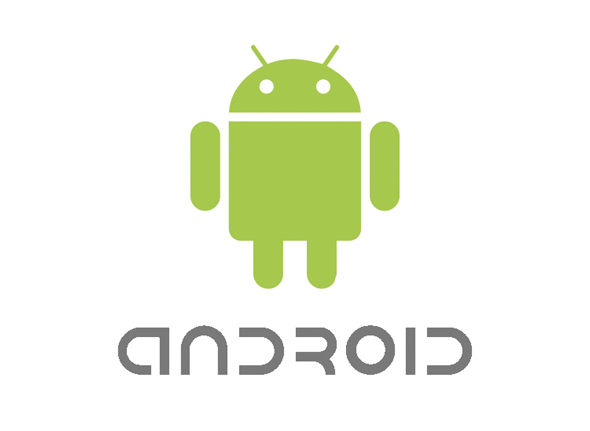

Compatibilidad
Windows
Microsoft Corporation es una compañía tecnológica multinacional con sede en Redmond, Washington, Estados Unidos. Microsoft es el acrónimo de microcomputer y software.Desarrolla, manufactura, licencia y provee soporte de software para computadores personales, servidores, dispositivos electrónicos y servicios.
Desde que fuera fundada en abril de 1975, Microsoft es una de las más grandes empresas desarrolladoras de software del mundo, entre los que destacan sus productos Microsoft Windows, el sistema operativo para PC más utilizado en el mundo, y Microsoft Office, la suite de oficina prácticamente de facto en toda oficina del planeta. Fundada por Bill Gates y Paul Allen, y con sede en Redmond, estado de Washington, Microsoft ha crecido de forma increíble desde sus inicios, en base a la innovación y también a ciertas prácticas comerciales poco recomendables. Si te interesa conocer un poco más en profundidad la historia y el desarrollo de esta importante empresa, te invitamos a leer el resto del artículo.

Microsoft ha sido acusada y duramente castigada prácticamente desde su inicio debido fundamentalmente a la política de monopolio que solía sostener, y si bien en la actualidad la justicia ha puesto a la empresa en su lugar, todavía suele haber cierta sospecha relacionada con su pasado en cada compra o producto que Microsoft lanza al mercado. En este sentido, una de las acciones judiciales más importantes que la compañía tuvo que afrontar fue cuando el Departamento de Justicia de los Estados Unidos la acusó de “Monopolio abusivo”, caso que fue resuelto a favor de Estados Unidos, tendiendo la empresa que dividir sus productos.
MAC
Apple Inc. Empresa multinacional estadounidense que diseña y produce equipos electrónicos y software. Entre los productos de hardware más conocidos de la empresa se cuenta con equipos Macintosh, el IPod, el IPhone y el IPad. Entre el software de Apple se encuentran el sistema operativo Mac OS X, el Explorador de medios de comunicación iTunes, la suite iLife (software de creatividad y multimedia), la suite iWork (software de productividad), Final Cut Studio, una suite de audio profesional, productos de software de cine de la industria y Logic Studio, una serie de herramientas de audio. La empresa opera más de 250 tiendas propias en nueve países, miles de distribuidores (destacándose los distribuidores premium o Apple Premium Resellers) y una tienda en línea (disponible en vaios países) donde se venden sus productos y se presta asesoría técnica.
Usa Información del Sistema para ver un resumen de la información acerca del hardware, el software y la red del Mac. La app Información del Sistema proporciona especificaciones detalladas e información de otro tipo sobre el hardware y el software del Mac, incluidos la red y los dispositivos externos. En algunas versiones de OS X, esta app se llama Perfil de Sistema. Selecciona el menú Apple > Acerca de este Mac. Se mostrará una descripción general del Mac, como el modelo, el procesador, la memoria, el número de serie y la versión de macOS. Para ver más detalles de la app Información del Sistema, haz clic en el botón Informe del sistema.

Android
Android. Es un Sistema Operativo además de una plataforma de Software basada en el núcleo de Linux. Diseñada en un principio para dispositivos móviles. Android permite controlar dispositivos por medio de bibliotecas desarrolladas o adaptadas por Google mediante el lenguaje de programación Java.
Todas las aplicaciones creadas con la plataforma Android, incluirán como base un cliente de email (correo electrónico), calendario, programa de SMS, mapas, navegador, contactos, y algunos otros servicios mínimos. Todas ellas escritas en el lenguaje de programación Java. Ejemplo de ello Alerta flash. Aunque el lenguaje de programación principal es Java, actualmente también permite programar aplicaciones en Kotlin, que es compatible con Java, con lo que se pueden realizar aplicaciones mixtas con los dos lenguajes. En caso de querer reutilizar código escrito en C/C++, se puede introducir mediante Android NDK (Native Development Kit).
Las versiones de Android finales disponibles en los terminales, comenzaron con un número (Android 1, 1.1), pero desde abril de 2009, las versiones de Android han sido desarrolladas bajo un nombre en clave y sus nombres siguen un orden alfabético:Apple Pie, Banana Bread, Cupcake, Donut, Eclair, Froyo, Gingerbread, Honeycomb, Ice Cream Sandwich, Jelly Bean, KitKat, Lollipop, Marshmallow, Nougat, Oreo y Pie. Por otra parte existe el número de API (Application Programming Interface), que corresponde a las librerías o bibliotecas de programación correspondiente a las diferentes versiones (o actualizaciones) de Android.
